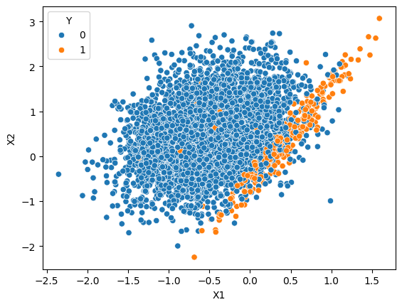
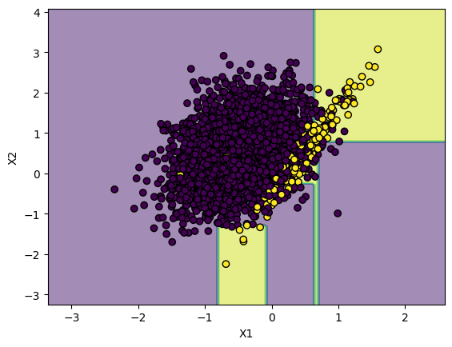
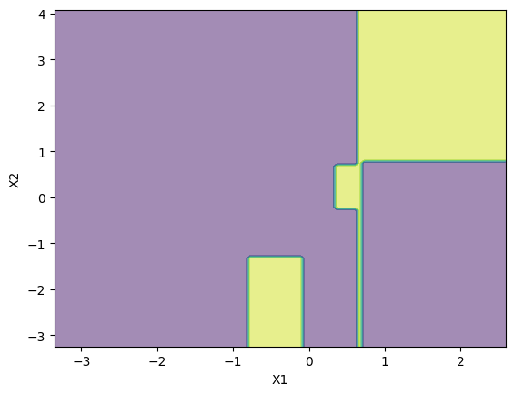
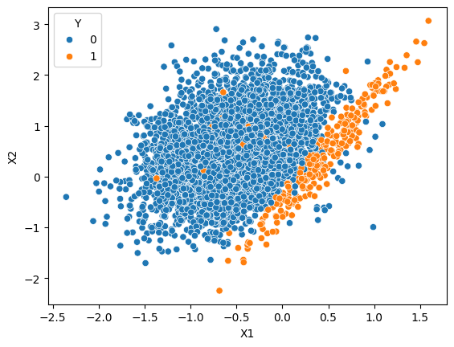
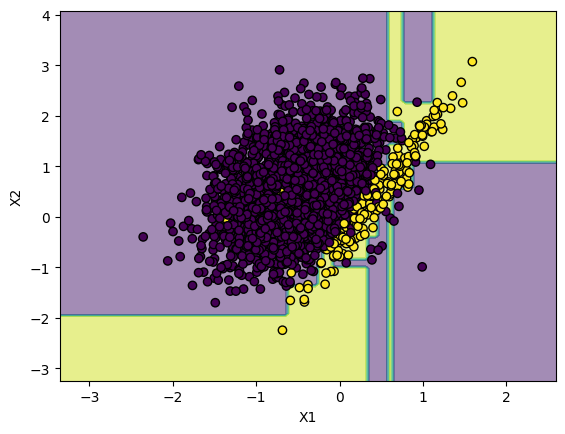
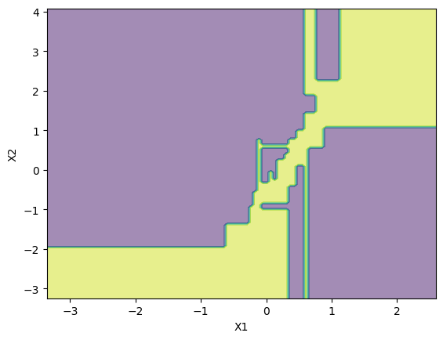
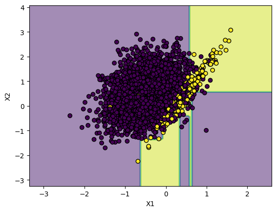

I had this idea when i was reading a book related to
fraudulent systems.
The fraudulent domain has a very much imbalanced dataset. According to the same book,
the ratio of fraudulent transactions is about 0.25% (not 25%).
So, for every 10,000 transactions, there are only about 25 fraudulent transactions.
This introduces the main problem of this domain. The Imbalanced Data.
This is a real problem because the model learns very little from minority class and
creates models that are biased towards majority class.
With Imbalanced Data, understanding model accuracy is a problem.
Consider the following data: 5000 samples, 4988 non-fraudulent transactions
and 12 fraudulent transactions(0.25%).
Now, consider this random model that predicted all transactions as
non-fraudulent. What is the accuracy?
Well, It is 99.76%!!!. So, even if the model is just "return non-fraudulent"
for every transaction,
it has an excellent accuracy and that's why other perfomance metrics like precision, recall
or F1-Score is used in fraudulent systems.
This will be a very simple blog (not even a blog). No Conclusions or takeaways. Just about how my intuition was wrong.
To solve this imbalanced dataset problem, we use methods like undersampling and oversampling. Undersampling is basically reducing the dataset size of majority class till the numbers are similar to minority class. Oversampling is increasing the size of minority class till the numbers are similar to majority class. Checkout SMOTE and ADASYN.
Coming back to my idea, I created a dataset using sklearn's make_classification.

and, I created a decision tree for this dataset and plotted the decision boundary.

As you can see, there are so many points that gets overlapped and is pretty
hard to create a decision boundary. Here is a plot of decision boundary without the
points.

I got the F1-Score of 0.47 with a Decision Tree of max_depth=4.
To solve this problem of extremely imbalanced data, we do undersampling. There are many different methods in undersampling, but, my idea was this:
- For each point from minority class, find 5 nearest neighbours.
- If a neighbour is from majority class, remove that point.

Again, I created a decision tree for this data and plotted the decision boundary. 
Here is a plot of this decision boundary without the points. 
We can clearly see the yellow part (minority class region) much larger than the previous one in the high dense region.
I ended up with a F1-Score of 0.69. Much better than the previous one. So, yeah, I have a much better F1-Score than previous one and i thought this was a fake reality the model was living in. If i gave it the original messy data instead of this fake reality, the model would perform worse is what i thought.
So, I did that and here is the plot.

I ended up with F1-Score of 0.63. Much better than the first model which
knew about the "original messy world" and was not living in this "fake reality".
So, why was my intuition wrong?
The key is understanding what the model is learning.
Machine learning models are trying to find the underlying signal amidst the noise.
Think of the majority class as the noise and minority class as the signal.
To understand the next part, you have to understand F1-Score.
Basically, think of F1-Score as a metric which takes in opinions of both
majority class points and minority class points and gives a score.
The problem is with the first model which was afraid of offending the majority class, created a decision boundary such that, in the dense part, the much larger region was given to majority class. It was afraid of the sheer number of points from the majority class in dense part. Since, F1-Score takes opinions of both majority and minority classes. The minority classes were against this model because it had a very very little region in the dense part. (Look at 3rd image)
The second model had much less majority class points and created a decision boundary such that even the minority class got a good amount of region in the dense part. and, since, F1-Score doesn't care about how much instances are correct from the total and instead considers both majority and minority class. Both the majority and minority classes were happy because they both got a good amount of region.
My cleaning idea removed the most confusing noise(majority class). By removing the noise, I wasn't creating a fake reality rather amplifying the signal. With all the noise gone, the Decision Tree could clearly see the true pattern and was more confident in giving larger region to the minority class.
Aaaaand.... This is how i recreated the algorithm
EditedNearestNeighbours
without even knowing about it.
Actually, EditedNearestNeighbours(ENN) is even more complex than my idea.
The idea of ENN is:
- For each point that belongs to majority class, find KNN. If the majority of these neighbours are from minority class, remove this point.
- For each point that belongs to minority class, find KNN. If the majority of these neighbours are from majority class, remove all those points.
That's how my intuition was wrong. I thought by training a model
on a 'simpler' world would make it fail in the 'real' messy one. I was wrong.
The 'simplified' world made the model to give attention to the minority class
even though they were in minority.
We often focus on picking the most complex models or
tuning hyperparameters, but i feel
the real kicker is the data itself.
By just tuning the data, we can use the simple model itself rather than
a complex one.
Btw, If you want to reproduce this scenario yourselves, here is the ipynb file.